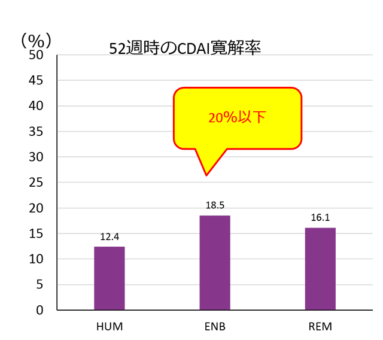

TNF阻害薬は1st Bioとして使用した際のCDAI寛解率は20%以下である
米国CORRONA Registry TNF CDAI寛解率
患者背景
| HUM n=460 |
ENB n=480 |
REM n=535 |
|
|---|---|---|---|
| 女性（%） | 78 | 76 | 72 |
| 年齢（歳） | 55±12 | 54±13 | 61±13 |
| 罹病期間（年） | 8.9±9.5 | 8.8±9.2 | 9.6±9.9 |
| CDAI | 22.3±13.7 | 20.2±12.3 | 22.0±13.4 |
| MTX（%） | 68 | 61 | 68 |
| PSL（%） | 35 | 33 | 33 |
